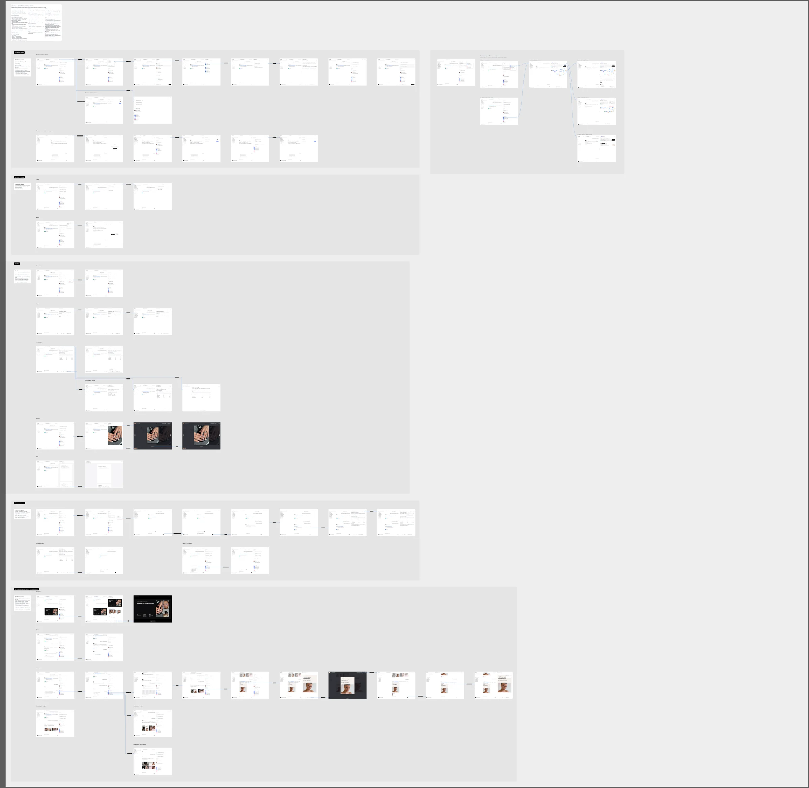
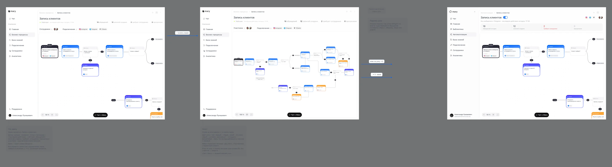
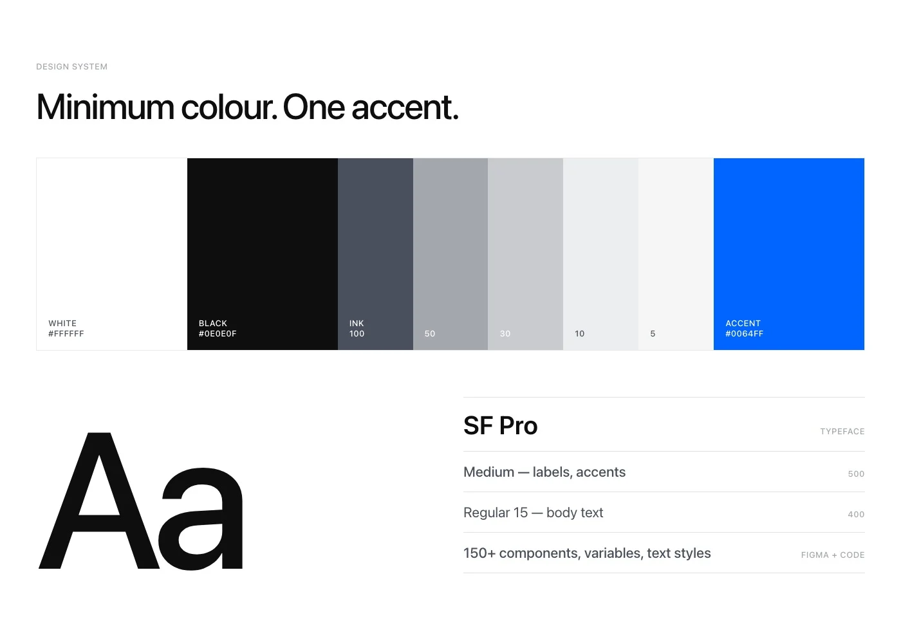
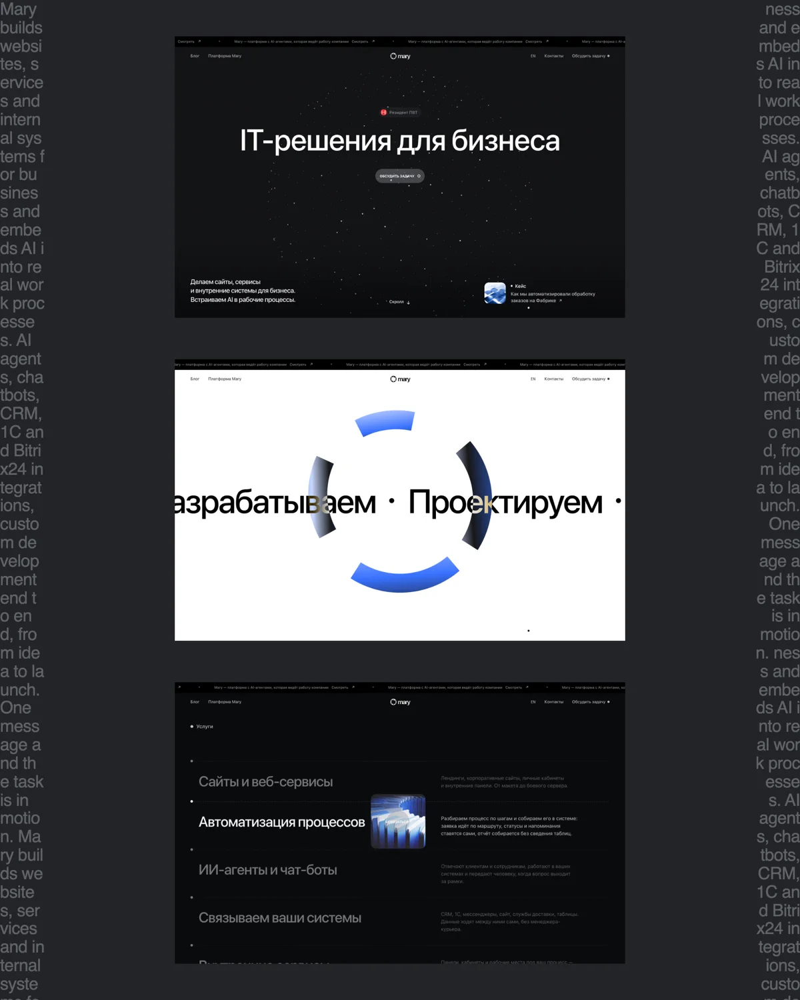
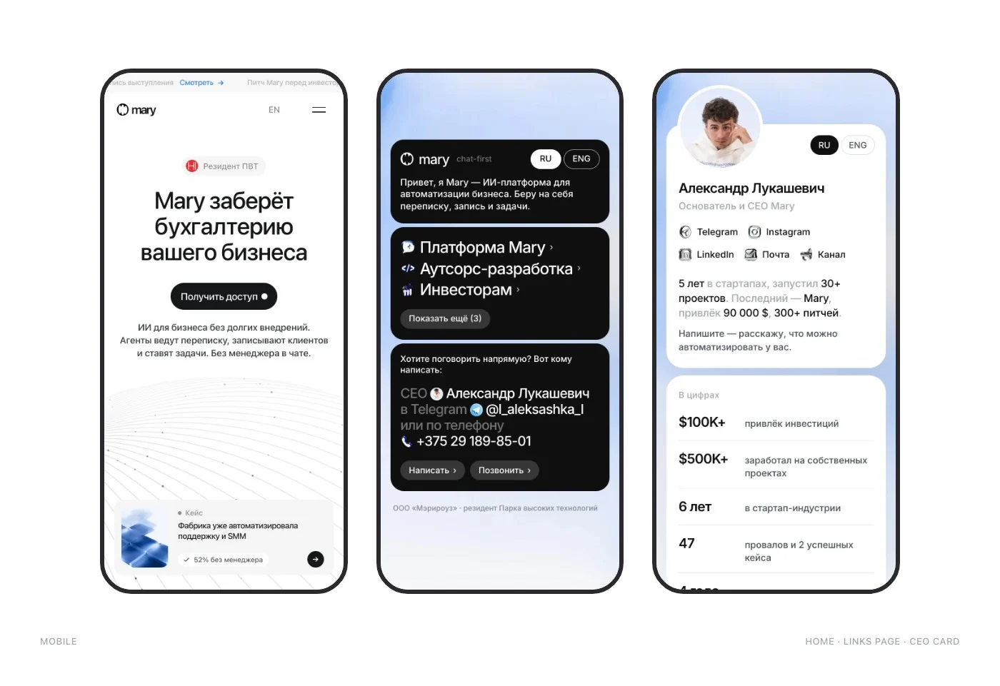

От идеи до гипотезы, которую можно проверить
Каждый отдел в компании ускоряет себя сам, а компанию целиком никто не собирает. Процессы живут в головах сотрудников.
Гипотеза Mary: бизнес описывает задачу словами, а платформа собирает под неё систему из AI-агентов. Я веду продукт с этой точки: от формулировки идеи до того, что получает пользователь.
- Моя рольHead of Product Design, упор на продуктовый процесс
- Команда5 разработчиков, CEO, я на продукте и дизайне
- МенторствоСтажировала джуна-дизайнера: менторила и учила работать в нашей дизайн-системе. На нём были баннеры для соцсетей, страницы сайта и рутинные задачи
- ТипB2B, AI-продукт для малого и среднего бизнеса
Одна ниша за раз
Мы не брали все ниши сразу. Брали одну, разбирали её до процессов и только потом шли в следующую.
В каждой нише я проводила интервью с владельцами и сотрудниками, смотрела, как они работают сейчас, и выписывала, где теряются деньги и время. Из этого собирался флоу под нишу.
Блочный флоу и обсуждение с командой
Каждый раздел начинался с блочного флоу: кто входит, что видит первым, где принимает решение, чем заканчивается сценарий, какие ветки и состояния есть по пути.
Флоу я обсуждала с командой до того, как рисовать экраны. Так быстро уходили лишние шаги и находились пропущенные, а разработчики сразу видели объём работы.

Флоу всей платформы: от входа до аналитики
Быстрый прототип, тест, ревью и план MVP
После обсуждения флоу я быстро собирала прототип, который реально работал: не картинки в Figma, а живой фронт, местами даже с бэком. Его сразу тестировали: давали в руки пользователям и проводили дизайн-ревью с командой. Разработчики оценивали по срокам каждую фичу и раздел.
По этим оценкам я разложила план действий на MVP 0, MVP 1 и MVP 2: приоритизировали разделы и фичи и ставили трекшен на разработку. Figma и прототип я вела параллельно через Claude, поэтому готовые цельные макеты переносятся в Figma за секунды.
- ЦиклБлочный флоу → обсуждение → прототип → тест и дизайн-ревью → оценка сроков
- ПланMVP 0, MVP 1, MVP 2 по приоритету разделов и фич, трекшен на разработку
- Figma и кодВедутся параллельно, макеты из прототипа переносятся в Figma за секунды
После прототипа я собирала фреймы в Figma: каждый раздел с ветками и состояниями.


Чат, база знаний и автоматизации как одна система
Mary не набор страниц. Чат, база знаний, данные, автоматизации и сотрудники дополняют друг друга: файл из чата попадает в данные, данные питают автоматизацию, автоматизация зовёт сотрудника.
Я проектировала связи между разделами так же подробно, как сами разделы: откуда человек приходит, что уже знает система и куда он пойдёт дальше.
- ЧатТочка входа. Задача словами, ответы и действия в одной ленте
- База знаний и данныеФайлы, источники, поиск, правка прямо в чате
- АвтоматизацииСхема на канвасе, шаги, прогоны, подтверждения сотрудников
- СотрудникиПриглашение по одной ссылке, роли, подключение к автоматизациям


Онбординг диалогом
Человек не настраивает систему руками. В начале в меню есть только чат, а разделы компании открываются по ходу разговора.
Mary сначала задаёт четыре-пять вопросов про бизнес и только потом собирает отдел. Это решение пришло из тестов: формы на первом экране люди бросали.
Дизайн-система и работа с разработкой
Все компоненты есть в Figma и кодом: с живыми примерами, размерами, токенами и правилами «так / не так». Разработчики забирают фронт, а не макеты.
С пятью разработчиками я веду дизайн-задачи в GitHub и сверяю продакшн с прототипом по страницам.
- FigmaПеременные, текстовые стили, 150+ компонентов
- КодТокены и библиотека компонентов с гайдом
- Дизайн-чекСверка продакшна с макетами, задачи в GitHub



Два сайта и аналитика после запуска
У Mary два направления: платформа и заказная разработка. Под каждое я сделала и сама выложила сайт, плюс страницы под ниши, КП и питч-дек.
После запуска я продолжаю их вести: SEO и GEO, цели и воронки в аналитике, тепловые карты и записи сессий. Где вижу затык или нестандартный путь, собираю гипотезу и проверяю её A/B-тестом.
- SEO и GEOЧтобы Mary находили поиск и советовали нейросети
- АналитикаЦели, воронки, тепловые карты, записи сессий
- ГипотезыA/B-тесты первого экрана, формы и офферов
 Сайтmaryrose.by
Сайтmaryrose.by Сайтsales.maryrose.by
Сайтsales.maryrose.by

Бренд, презентации и соцсети
Знак, баннер для стенда, бейджи, брошюра, питч-дек, КП и визуал соцсетей сделаны в той же системе, что и продукт. Поэтому сайт, интерфейс и презентация выглядят как одно целое.

Знак Mary по сетке и баннер для стенда


Бейджи команды


Мобильная версия и CRM
Сейчас в работе мобильная версия платформы и CRM-контур для компаний, с которыми мы работаем. CRM я строю как часть той же экосистемы: по опыту клиентов она должна быть привычной, но вести сделки в ней помогают агенты.
Платформу и кастомные решения продолжаем улучшать по обратной связи пользователей. Сделана большая работа, и она продолжается.
- В работеМобильная версия, CRM, кастомные решения под клиентов
- Как решаемИнтервью, тесты прототипа, аналитика, обратная связь